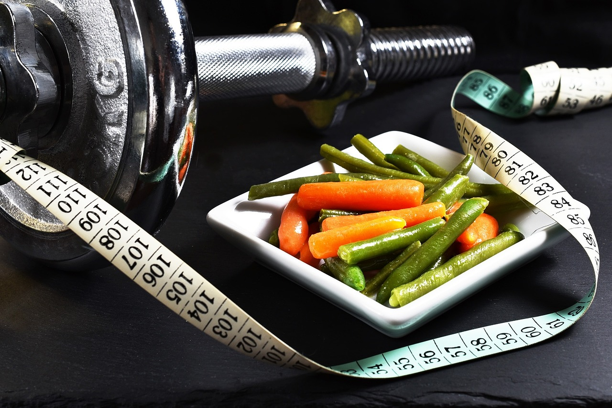

Mejora tu humor

Al realizar actividad fisica por la mañana, gracias a la producción de endorfinas, estas moleculas son producidas por una pequeña glandula ubicada en la base del celebro el cual se estimula con el ejercicio físico. Las endorfinas inhiben las fibras nerviosas que transmiten el dolor, disminuyendo la ansiedad y aumentan la percepción de bienestar. Así, iniciar el día haciendo ejercicio te permitirá afrontar el resto de la jornada con una buena dosis de buen humor.
Acelera la eliminación de líquidos

Para relizar ejercicio en las mañanas, debemos optar a las necesidades de nuestro organismo, o a los objetivos que estemos buscando. El ejercicio en las mañana acelera la eliminación de líquidos, por lo que es muy recomendable para todas aquellas personas que quieran bajar de peso. Por el contrario, si tu objetivo es mejorar la fuerza, será más eficaz buscar un buen espacio en el día. Para cumplir con lo mencionado anteriormente se debe de llevar una buena dieta balanceada para cumplir nuestros objetivos.
Regula el ritmo biológico

El ejercicio en las mañanas nos ayuda a regular nuestro ritmo circadiano, que es el que regula el ciclo sueño-vigila que se repite constatemente en nuestra vida. Todo esto nos evita las odiosas noches de trasnocho. Además, es recomendable realizar ejercicio en las mañanas para las personas con problemas para conciliar el sueño.
Consejos para realizar ejercicio en las mañanas
Aunque la práctica deportiva a primera hora tiene muchos beneficios, es necesario seguir algunos consejos para no poner en riesgo su efectividad ni nuestra salud y obtener los beneficios lo más rápido posible.
Desayuna antes de entrenar: Según el ejercicio que vayas a realizar, procura siempre desayunar o comer un alimento que te aporte energía, dependiendo del qué tan exigente sea el ejercicio, si tu entrenamiento es más exigente, desayuna lo suficientemente bien para afronatar la demana de gasto calórico. Recuerda nunca realizar ejercicio en ayunas.
Establece tu rutina: Programar la hora de levantarte, el tiempo se aseo, el desatuno y el ejercicio que tienes pensado realizar. Con una buena planificación garantizará que cumplas con tu objetivo sin agobios.
Deja preparado los materiales: Antes de irte a dormir, deja todo preparado para el día siguiente, como: ropa, agua, zapatillas. Esto ayuda a que te sientas motivado para tus entrenamientos.
!Ya no hay más excusas! ¿Qué estás esperando para cumplir con tus objetivos? Ponte a domir tempramo y levantate a la primera hora del día nada mejor que escuchando música para iniciar.